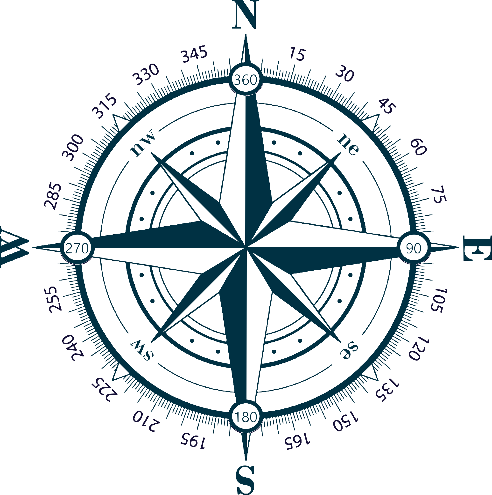

Drone Weather & Risk Assessment
Get Pilot Location
Fetch METAR/KP Risk Assessment
Save Weather Check
Searching weather sources...
Drone Weather Survey
Run METAR Weather Check to load current survey details.

Risk Score Guide
Score
Band
Operational Meaning
0-2
Green
Low Risk
3-4
Yellow
Caution
5-6
Red
Risky Conditions
Weather Check Record
No weather check saved yet.
Run New Assessment
Closest METAR Stations
Closest stations will appear here.
Pilot Location
Current Pilot Location unknown. Refresh after setting location, or click Use Current Location.
NOAA Geomagnetic Planetary Kp Index
Scoring Index
Maximum Score 7
Wind (higher of sustained or gust):
0-9 KT = 1, 10-15 KT = 2, 16-20 KT = 3, 21+ KT = 4
Gust spread:
> 8 KT = +1
Visibility:
< 3 SM = +1
Ceiling:
< 1000 ft = +1
Close
▼
Current METAR Report
Run METAR Weather Check to load structured observation details.
▼
Drone Wind Resistance Guide
Reference Table
Filter by Drone Model
Clear Filter
Edit Wind Guide JSON
Drone Model
OEM m/s
OEM km/h
OEM kt
Conv mph
Validated OEM
Loading wind guide models...
Reference charts only. Always follow your manufacturer's limits and any site-specific conditions.
Data source:
data/drone_wind_resistance.json
(edit this file to add/remove models). Optional fields:
oemWindMs
,
oemWindKmh
,
oemWindKt
,
verified
.
Wind Guide JSON Editor (Admin Only)
Edit values and save to update the Wind Guide table display. For persistent changes, commit the source JSON file to GitHub.
Drone Model
OEM m/s
OEM km/h
OEM kt
Verified
Remove
Add Row
Reset to Source
Export JSON
Save Changes
Close